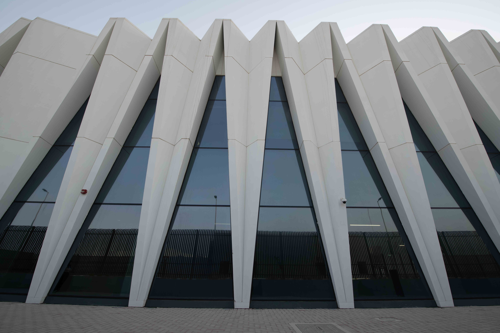

Core Competencies & Technical Skills
BIM Facade Methodologies:
- ISO 19650 Compliance
- BIM Workflow Management
- Common Data Environment (CDE)
- Clash Detection
- Coordination Meetings
- Model Validation
- Shop Drawing Development
- As-Built Documentation
- Material Takeoff Extraction
- Design Optimization
- Facade System Coordination with Architectural and Structural Elements
Tools & Technologies
- AutoCAD
- BIM 360 / Autodesk Construction Cloud (ACC).
- Revit
- Navisworks
- LOD 300-500
- Ms Office
- Dynamo
My Projects

Khazna Data Center
Project Overview:
As the BIM Facade Lead for the Khazna Data Center project, I directed the development and coordination of high-performance exterior envelope models. By implementing rigorous quality control protocols and ensuring seamless integration between intricate facade systems and complex structural elements, I successfully delivered a highly precise, construction-ready digital model optimized for rapid on-site assembly.

Sheikh Zayed National Museum
Project Overview:
Executed advanced BIM modeling for the complex outer glass railing systems, managing alignment along organic structural floor edges. Established parametric baselines to coordinate critical glass panel splits, structural base shoe embeddings, and hardware clearance lines. Resolved spatial clashes between heavy structural steel elements and architectural glazing sub-assemblies to secure aesthetic continuity and structural integrity.

Dubai New Police Academy-Dubai
Project Overview:
Senior BIM Lead coordinator for the project, ensuring seamless integration of architectural, structural within a federated model environment. Managed clash detection, model validation, and interdisciplinary coordination workflows to improve design accuracy, reduce conflicts, and support efficient project delivery. Collaborated with consultants and stakeholders to maintain BIM standards, streamline information exchange, and facilitate construction-ready documentation for the state-of-the-art sports facility.

Ramhan Island-Abu Dhabi
Project Overview:
Served as the BIM Coordinator for the prestigious Ramhan Island development, overseeing the integration of complex architectural, structural, and MEP Revit models. By driving rigorous clash-resolution matrices and ensuring cross-team technical alignment, I successfully bridged the gap between intricate waterfront design concepts and zero-conflict construction execution.

Saadiyaat Lagoon-Abu Dhabi
Project Overview:
BIM Coordinator for the Saadiyat Lagoons project, managing the integration of architectural, structural and MEP models to ensure seamless coordination and conflict resolution.

Beach Mansion-Dubai
Project Overview:
Served as the BIM Coordinator for the prestigious Beach Mansion development at Emaar Beachfront. I oversaw the synchronization of multi-disciplinary Revit models, driving deep clash-resolution protocols between architectural designs and complex engineering services. My focus on precise modeling and technical quality control ensured that the intricate, ultra-luxury aesthetic of the towers successfully translated into a zero-conflict, buildable asset.

Veldrome-Abu Dhabi
Project Overview:
Performed BIM coordination for the Abu Dhabi Velodrome project, ensuring seamless integration of architectural, structural within a federated model environment. Managed clash detection, model validation, and interdisciplinary coordination workflows to improve design accuracy, reduce conflicts, and support efficient project delivery. Collaborated with consultants and stakeholders to maintain BIM standards, streamline information exchange, and facilitate construction-ready documentation for the state-of-the-art sports facility.

Elysian Mansions-Dubai
Project Overview:
As the BIM Coordinator for the prestigious Elysian Mansions development, I managed the end-to-end integration of multi-disciplinary Revit models. By driving rigorous clash detection workflows and fostering tight alignment between architectural and engineering teams, I ensured the complex, high-end design details transitioned seamlessly from digital models to on-site execution.

Dubai Expo Mall-Dubai
Project Overview:
I am responsible for creating all the façade elements in Revit to create a BIM model of the façade. I also ensure there is no clash between the façade models and those of other subcontractors. The façade models were all modeled according to LOD 350.

The Palace Hotel & Residences@ Dubai Creek Harbour, Dubai
Project Overview:
Provided BIM coordination for The Palace Hotel & Residences at Dubai Creek Harbour, ensuring effective integration of architectural, structural, and MEP models throughout the design and construction phases. Conducted clash detection, model reviews, and multidisciplinary coordination to enhance design quality, resolve conflicts, and support project delivery objectives. Collaborated with project stakeholders to maintain BIM standards, optimize workflows, and deliver accurate construction documentation for the luxury hospitality and residential development.

Orla Mansion and Guest House-Dubai
Project Overview:
Served as the Facade BIM Lead for the prestigious ORLA Mansions development on Palm Jumeirah. I oversaw the structural and architectural synchronization of the complex, high-performance exterior building envelope. By enforcing rigid QA/QC modeling standards and driving multi-disciplinary clash resolution matrices, I successfully bridged the gap between intricate, large-format luxury glazing concepts and flawless, conflict-free site installation.

The Burj Crown Residential
Project Overview:
As a BIM Modeler for the Burj Crown Residences tower in Downtown Dubai, I was responsible for the precision-modeling of complex architectural and structural elements. By developing robust parametric families and supporting rigorous cross-disciplinary clash detection, I ensured the 44-story tower’s digital model met strict Emaar standards, paving the way for flawless on-site execution and seamless documentation delivery.

Vida Marina
Project Overview:
Led Revit BIM modeling and interdisciplinary coordination for the prestigious Vida Marina development.Optimized spatial design and resolved structural/MEP clashes to ensure seamless on-site execution.Delivered comprehensive, high-accuracy construction documentation and lifecycle data.
Get in Touch
I'm always open to new opportunities and collaborations.Whether you have a project idea, a job offer,feel free to reach out!